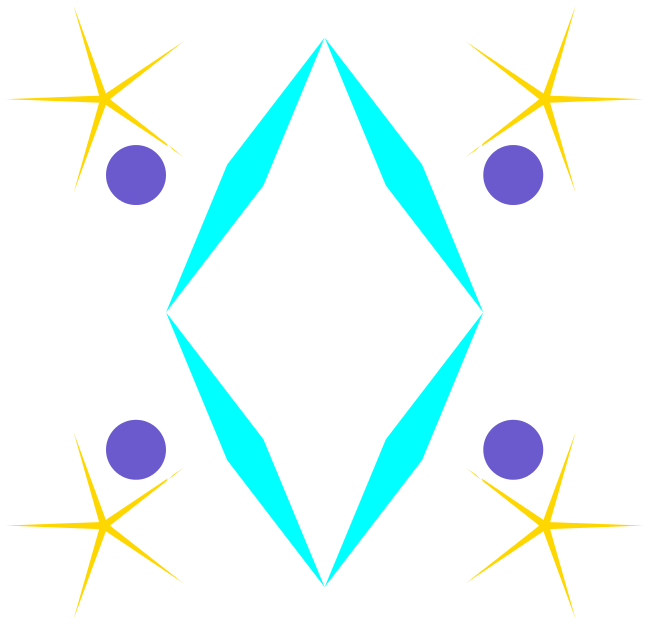
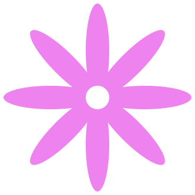

6.12
3 Kuvat - 2htdp/image
| (require 2htdp/image) | package: htdp-lib |
Kuvienpiirtokirjasto 2htdp/image tarjoaa funktioita peruskuvioiden piirtämiseen, muokkaamiseen sekä yhdistelyyn isommiksi kuviksi. Peruskuviot voivat olla erilaisia monikulmioita, ellipsejä, ympyröitä tai tekstiä. Kirjaston avulla voidaan käsitellä myös bitmap-kuvia (jpg, png). Valmiita kuvia voidaan kiertää, skaalata, kääntää pelikuvaksi sekä asetella päällekkäin.
Tässä osiossa esitellään tärkeimmät 2htdp/image-kirjaston toiminnot. Täydellinen kuvaus löytyy osoitteesta: http://docs.racket-lang.org/teachpack/2htdpimage.html

